予定と思い出を、
ひとつのアプリに。
ヒビルカは、これからの予定と、行ってきた思い出を一緒に残せるアプリです。大切な人には、LINEで予定を届けられます。
- 🗓️予定を入れて
LINEで届ける - 🔍行きたい場所を
天気と一緒に探す - ✨AIが思い出の
文章を作る
はじめかた
アプリをダウンロードする必要はありません。ホームページを開くだけで使えます。
1アプリを開く
このページの上の アプリを開く を押します。はじめての人には「あなた専用のヒビルカ」ができます。
2ホーム画面に追加する
次からすぐ開けるように、スマホのホーム画面にアイコンを置いておきます。
- iPhone：Safariの下の共有ボタン（□に↑）→「ホーム画面に追加」
- Android：右上の︙ →「ホーム画面に追加」
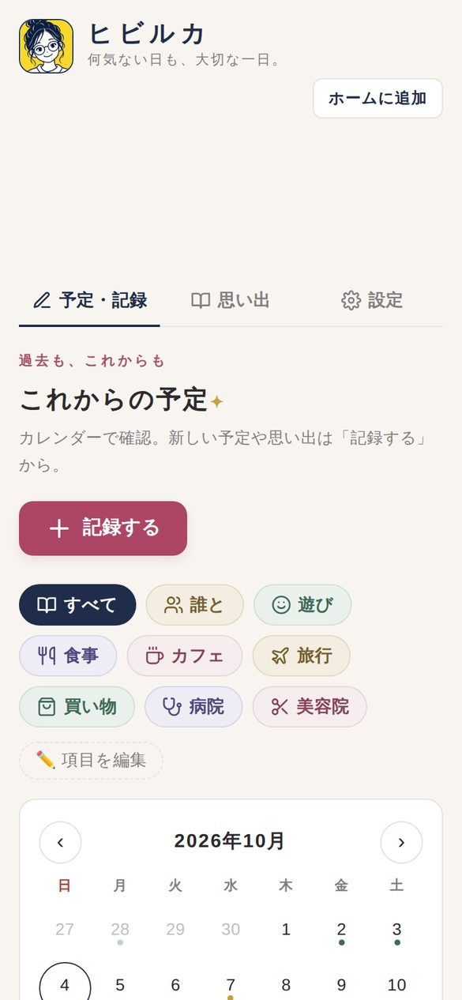
予定を入れる
カレンダーで、これからの予定がひと目で分かります。
1「＋ 記録する」を押す
「予定・記録」のページにある ＋ 記録する を押します。
2上から順に入れる
- 「予定」か「思い出」を選ぶ
- 遊び・食事・カフェなど、種類を1つ選ぶ
- 日付と時間（時間はなくてもOK）
- 誰と？ どこで？ なにをする？
最後に 予定を保存する を押せば完成です。
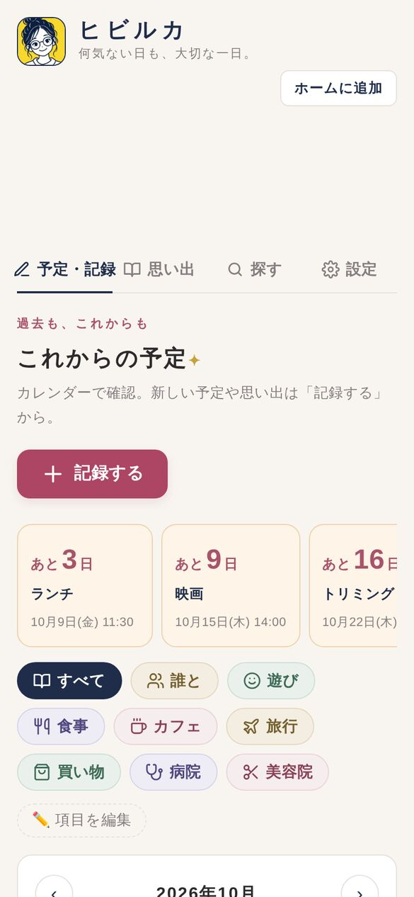
3楽しみな予定は「あと◯日」
60日以内の予定は、いちばん上に 今日！・明日！・あと3日 のように近い順に3つ並びます。押すとその予定が開きます。
4直したいときは「✏️ 直す」
予定のカードの下にある ✏️ 直す を押すと、すぐに直す画面が開きます。くわしく・送る からは、LINEで送る・消すなどができます。
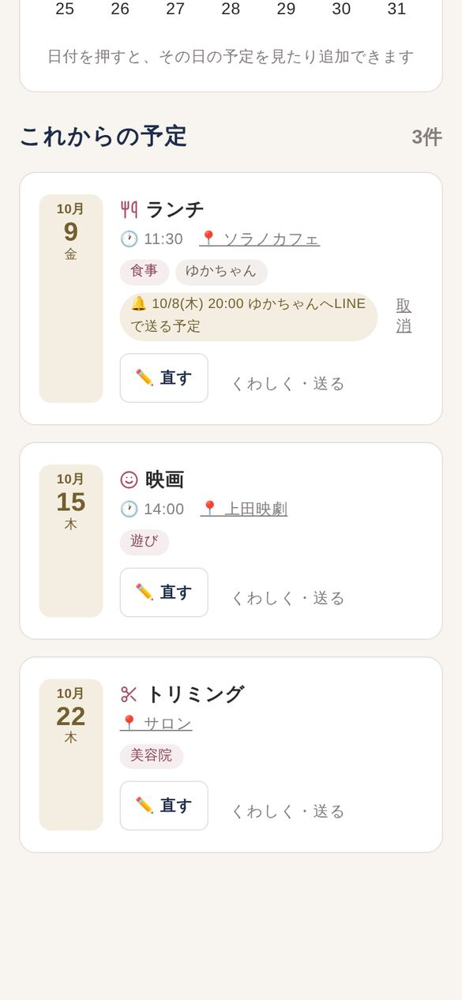
LINEで予定を届ける
家族や友だちに「この日、忘れないでね」をLINEで自動で届けられます。
1届けたい人を登録する（はじめの1回だけ）
「設定」→「LINEの送信先を追加」で名前を入れて、できた招待リンクを相手に送ります。相手がリンクを開いてヒビルカのLINEを友だち追加し、承認すると登録完了。名前の横に緑の点が付きます。
2いつ届けるか選ぶ
予定を開いて LINEで予定を送る を押します。
- 誰に？ 届けたい人を選ぶ（何人でも）
- いつ送る？「前の日の朝 9:00」「当日の朝 7:00」「予定の1時間前」など。日付と時間を自由に決めることもできます
この日時に送る で予約完了。その時間になると、ヒビルカのLINEから相手に届きます。
- 💬 ひとこと 「楽しみにしてるね！」のような一言を添えられます（100文字まで）
- 📱 アプリ通知 自分あてなら、LINEではなくスマホに直接届けることもできます（12章）
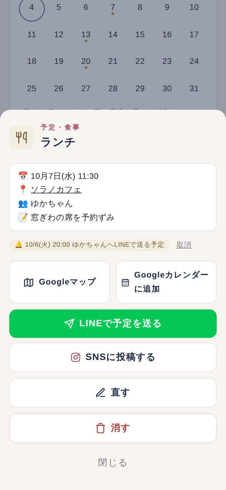
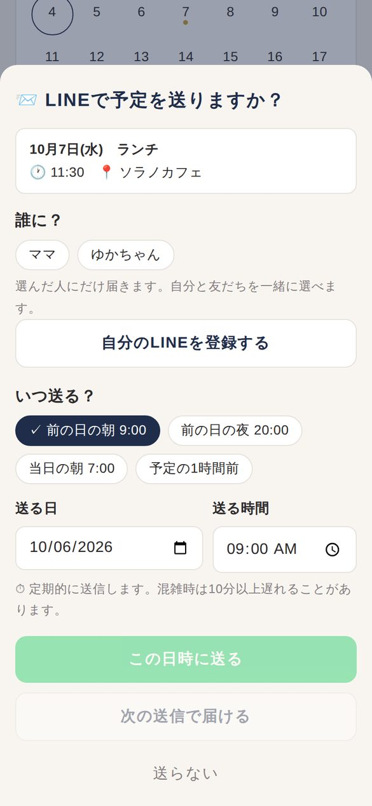
思い出を残す
行ってきた場所や、あったことを写真と一緒に残します。
1写真を追加するだけで、日付と場所が入る
記録の画面で 📷 写真を追加 を押して写真を選ぶと、撮った日にちと撮った場所（お店の名前や町名）が自動で入ります。写真は4枚まで。
2「また行きたい」に ♥
気に入った場所は ♡ また行きたい を押しておくと、あとで一覧で見られます。
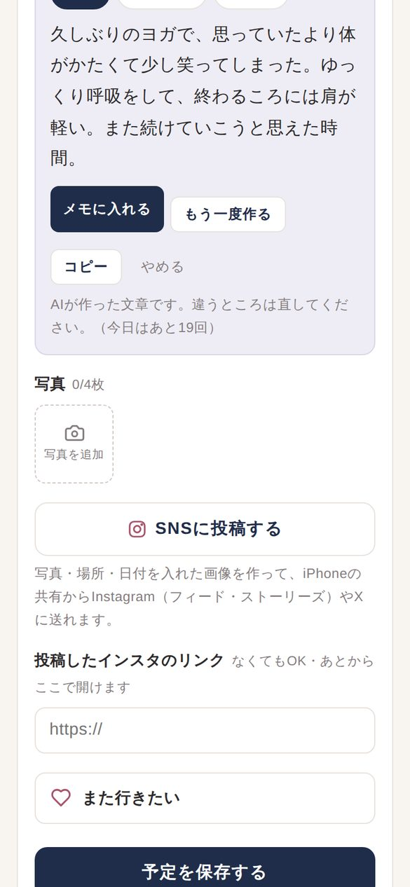
AIで文章を作る ✨
書くのが苦手でも大丈夫。AIが、記録から思い出の文章を考えてくれます。
1題名をAIに考えてもらう
「どこで？」やメモを入れてから ✨ 題名の案をAIに聞く を押すと、案が3つ出ます。押すと題名に入ります。
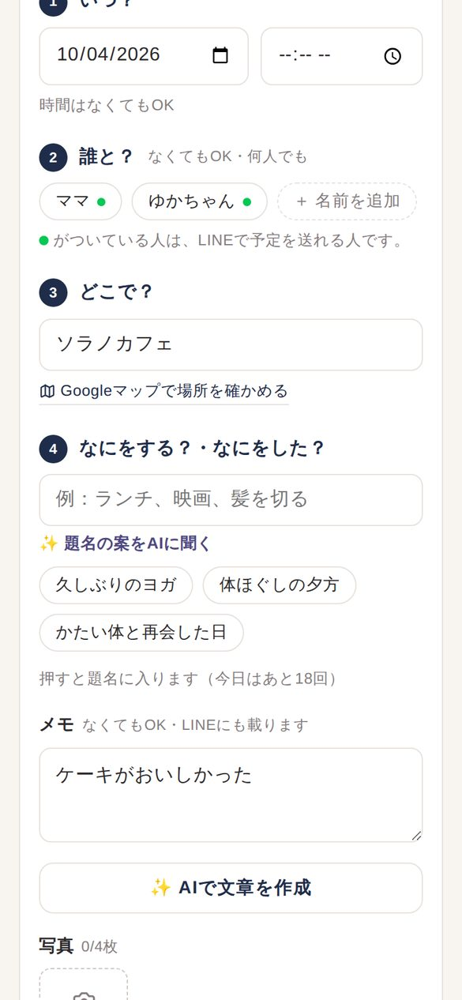
2思い出の文章を作る
メモの下の ✨ AIで文章を作成 を押します。3つの書き方から選べます。
- 日記：80〜120文字の、日記のような文章
- ひとこと：アルバムに添える短い一言
- SNS用：絵文字とハッシュタグ付きの投稿文
気に入ったら メモに入れる。入れたあとでも「元に戻す」で戻せます。
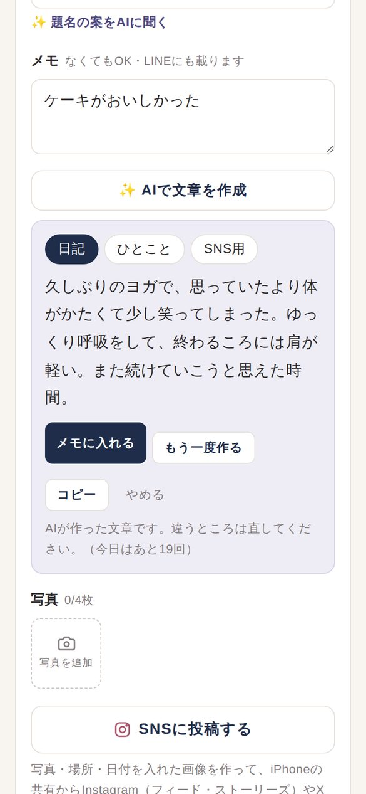
LINEから記録する
位置情報を送ったり、話しかけたりするだけ。アプリを開かなくても記録できます。
1はじめに1回だけ、つなぐ
「設定」→「LINEから記録する」の LINEとつなぐ を押します。LINEが開いて番号入りの文が入っているので、そのまま送信。「つながりました」と返事が来たら完了です。
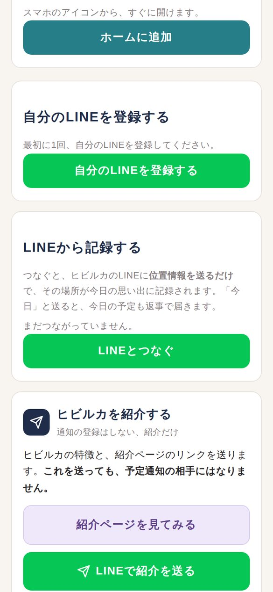
2位置情報を送る
トーク画面の「＋」→「位置情報」で今いる場所を送ると、今日の思い出に記録されます。返事のボタンで種類も選べます。
3話しかけるだけで記録 💬
ふつうに文を送ると、AIが読み取って記録します。
- 「10/12 14時 歯医者」→ 予定に入る
- 「来週の土曜 ゆかちゃんとランチ」→ 予定に入る
- 「昨日 上田城でお花見した」→ 日記の文章つきで思い出に
4下のメニューから
- 今日 → 今日の予定と記録、これからの予定（明日・あと◯日）
- また行きたい → 行きたいリストと♥の場所が、写真つきのカードで。「地図で見る」「アプリで予定にする」ボタン付き
- ふりかえり → 今月の思い出をAIがまとめて返事。「先月」「8月のふりかえり」「2025年12月」のように前の月も。返事の下のボタンでさらに前の月へ
- 友だちに紹介 → ヒビルカのLINEを友だちに送れる
何の記録ですか？下から選べます。
10:05 上田城跡公園
🎉 これからの予定
明日｜10月7日(水) 歯医者
あと3日｜10月9日(金) ランチ
思い出を見返す
「思い出」のページは、写真が並ぶアルバムになっています。
1アルバムで見る
写真をタップすると、くわしい記録が開きます。📍 地図で見る で場所もすぐ確認できます。「また行きたい」のタブには、♥を付けた場所だけが集まります。
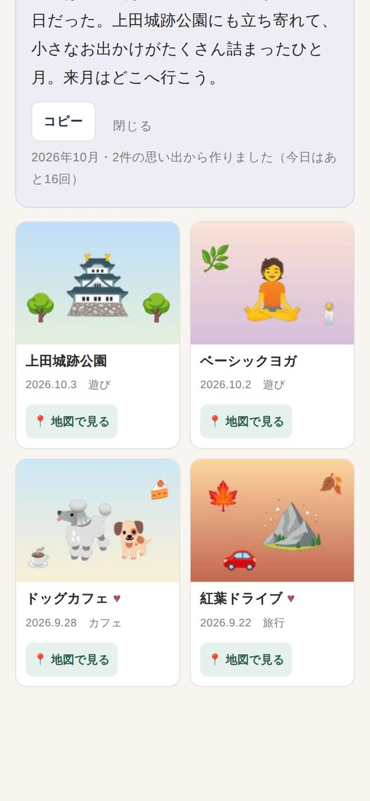
2AIでひと月をふりかえる
思い出のページのいちばん上にある 今月 先月 を押すと、その月の思い出をAIがまとめてくれます。コピー で日記やSNSにも使えます。
ほかの月をふりかえる から、思い出のある前の月（去年の夏など）も選べます。
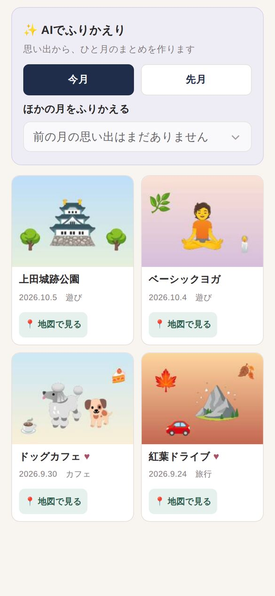
3思い出マップ 🗺
思い出のページの 思い出マップ を押すと、今までの思い出が地図にピンで並びます。ピンを押すと写真と題名が出て、開く でその記録へ。
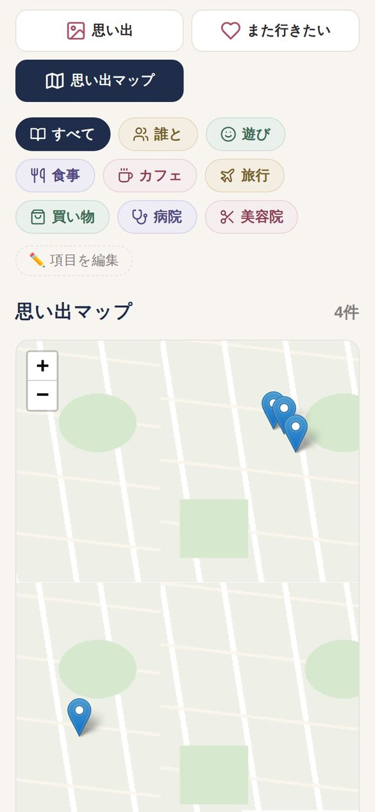
インスタ・Xに投稿する
写真・日付・場所を入れたかわいい画像を、ボタンひとつで作れます。
1「SNSに投稿する」を押す
思い出を開いて SNSに投稿する を押し、形を選びます。
- インスタ（フィード）：正方形の画像
- インスタ（ストーリーズ）：縦長の画像
- X：画像＋文章。✨ AIに投稿文を考えてもらう で文章も作れます
2共有画面でアプリを選ぶ
共有して Instagram を選ぶ を押すと、スマホの共有画面が開きます。一覧から Instagram や X を選べば、そのまま投稿できます。
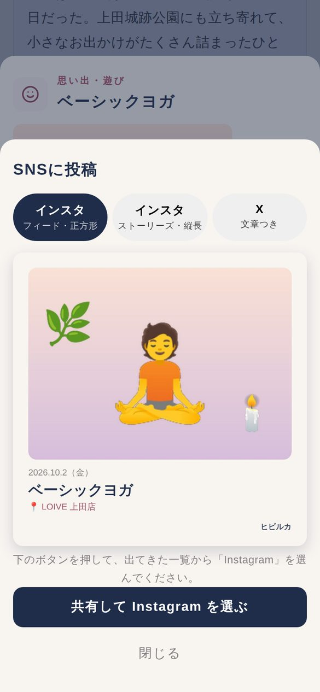
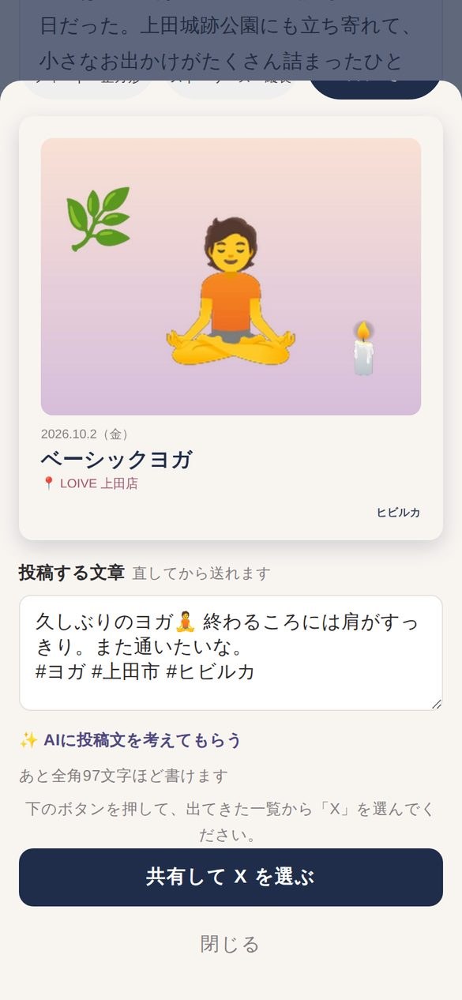
スポットを探す 🔍
「探す」のページで、行く場所と日を決めると、その日の天気に合わせてごはん屋さんやおでかけ先を探せます。
1どこに行く？ いつ行く？
- 📍 今いる場所 今いるあたりで探す
- 🗾 県・市町村で選ぶ 「埼玉県」だけでも、「長野県 松本市」のように市町村まででも
- 🗺 場所を指定 「軽井沢駅」「松本城」のように名前で
行く日は 今日・明日・今度の土曜・日曜 か、6日先までの日にちから選びます。
2その日の天気とおすすめ
選んだ場所・日の天気（気象庁の予報）が出て、雨なら屋内や温泉、晴れなら公園や道の駅、のようにおすすめが並びます。
3行き方を調べる 🚃🚗
「到着」に場所を入れて 🚃 電車で 🚗 車で を押すと、Googleマップで時間・乗りかえ・到着時刻がわかります。
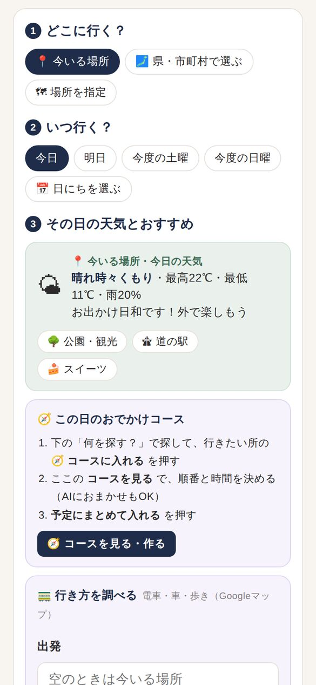
4何を探す？
カフェ・ランチ・ラーメンなどのボタンを押すとすぐ探します。下の お店の条件 で範囲（1km・3km・市内まるごと）、駐車場あり・個室・🚬 喫煙OK・クーポンあり、予算も選べます。
お出かけは、公園・屋内（雨の日）・温泉・道の駅・ドッグラン・🚬 喫煙所。
5キーワード検索
複数の単語をスペースで並べると、両方を含む結果を探しやすくなります（例：上田駅 ランチ）。
- OR どれか（例：そば OR うどん）
- -（マイナス） その言葉を除く（例：カフェ -チェーン）
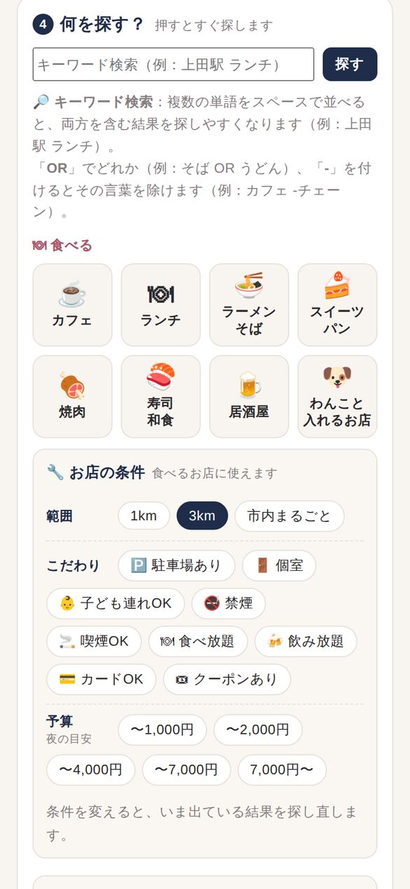
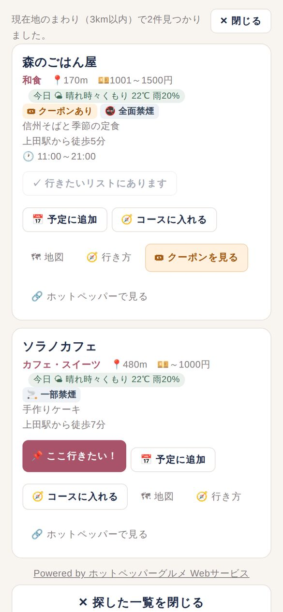
行きたいリスト・また行きたい・おでかけコース
「行ってみたい」を集めておいて、行く日が決まったら1日のコースにできます。
1📌 行きたいリストに入れる
探した場所の 📌 ここ行きたい！ を押すと、「探す」ページの下の 行きたいリスト に入ります。予定に入れると「予定あり」、その日が過ぎると「行った」になり、📝 思い出を残す がすぐ押せます。
2♥ また行きたい
行ってよかった思い出には ♥ を。思い出のページの「また行きたい」に集まります。
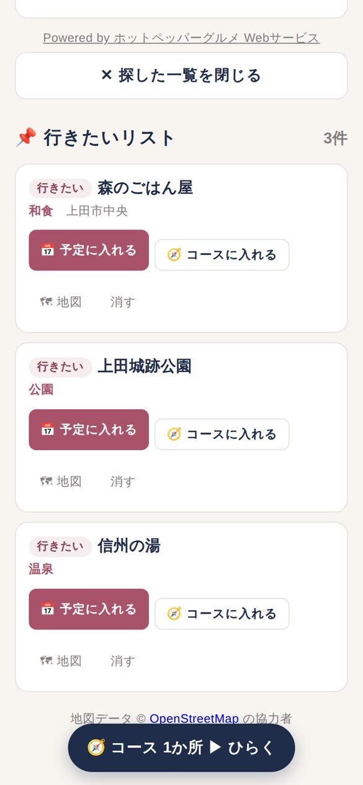
3🧭 おでかけコースを作る
- 行きたい場所の 🧭 コースに入れる を押す（行きたいリストからもOK）
- 「探す」の上の方の 🧭 コースを見る・作る か、画面の下の「コース ◯か所 ▶ ひらく」を押す
- ↑↓で順番を入れ替え、時間を入れる。📏 近い順に並べる や ✨ AIに順番と時間を考えてもらう も
- 📅 予定にまとめて入れる で、全部の場所が時間つきの予定になります
場所と場所の間には、車でかかる時間の目安と、電車・車の行き方のボタンが出ます。
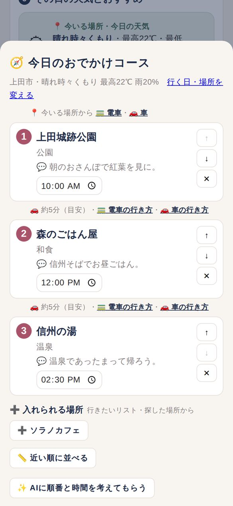
お得・イベント・ご当地グルメ
行く場所に合わせて、クーポンやイベント、名物やお土産も探せます。
1🎟 クーポン
- クーポンのあるお店を探す ホットペッパーのクーポンが使えるお店。カードの 🎟 クーポンを見る から
- 地元のお店のクーポン 画面をお店の人に見せるだけ。今の日時が秒まで動いて出るので、その場で開いた画面だとわかります
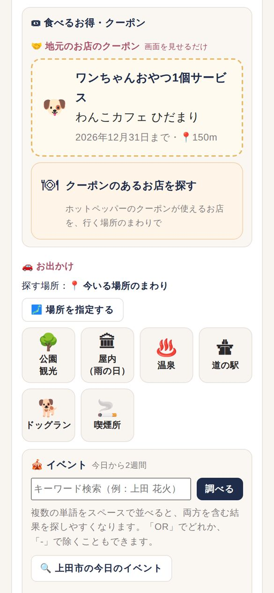
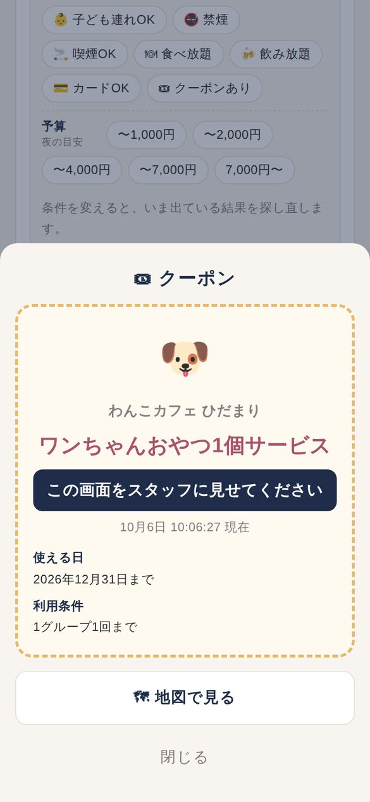
2🎪 イベント
行く場所の「今日のイベント」「◯月のイベント」をすぐ調べられます。イベント名のキーワードでも探せます（例：上田 花火）。
3🍜 ご当地グルメ・お土産
行く場所の名物を調べたり、名物が食べられるお店を探したり。お取り寄せ・お土産・ふるさと納税は楽天市場で見られます。
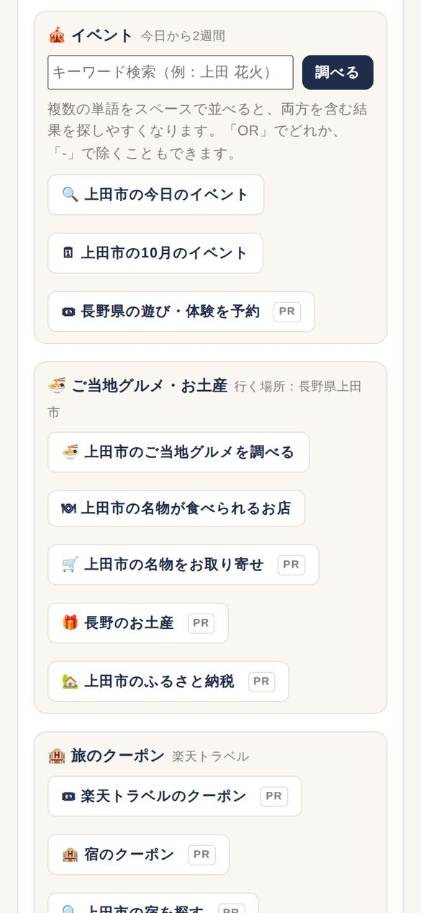
アプリの通知 📱
自分あての予定のお知らせを、LINEではなくスマホに直接届けます。
1この端末で受け取る
「設定」→「📱 この端末に通知」の この端末で通知を受け取る を押して、通知を「許可」します。テスト通知を送る で届くか確かめられます。
2予定を送るときに選ぶ
予定の「LINEで予定を送る」で 📱 アプリ通知 を選ぶと、予約した時間にスマホへ届きます。LINEの月30通には数えません。
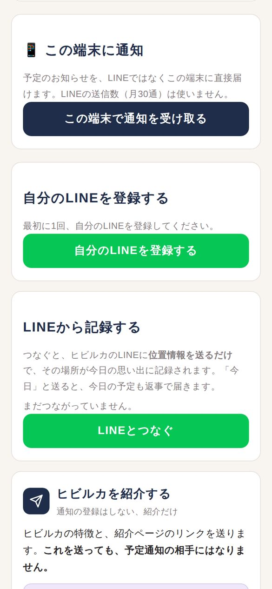
よくある質問
お金はかかりますか？
かかりません。AIの文章作成も無料です（1人1日20回まで）。
LINEのお知らせは何通でも送れますか？
無料で続けるため、1人あたり月30通までです（1人に送ると1通）。自分あてなら「📱 アプリ通知」を使うと数えません。
天気はどこまで先がわかりますか？
気象庁の予報なので、今日から6日先までです。日本の中の場所だけです。
「PR」が付いているのは何ですか？
楽天などの広告（アフィリエイト）のリンクです。押して買い物や予約をすると、ヒビルカの運営に少しだけ報酬が入ります。値段は変わりません。
自分の記録は、ほかの人に見えますか？
見えません。記録はあなた専用です。LINEで届けた予定だけが、選んだ相手に届きます。
LINEで届けたら、相手の通知はうるさくない？
選んだ日時に1回届くだけです。届けたくない人は選ばなければ送られません。
機種を変えたら記録はどうなりますか？
「設定」→「機種変更・別の端末でも使う」でメールアドレスとパスワードを登録しておくと、新しいスマホでもログインして同じ記録を見られます。
写真の場所が入らないことがあります
スマホの設定で、写真に位置情報が残っていないと入りません。そのときは「どこで？」に手で入れてください。